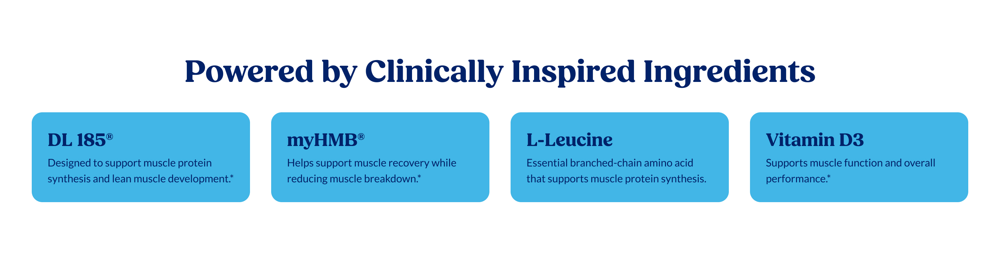
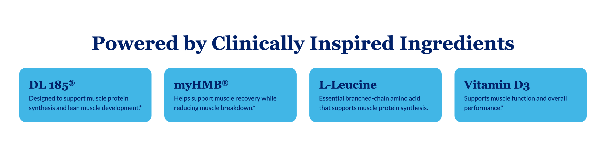
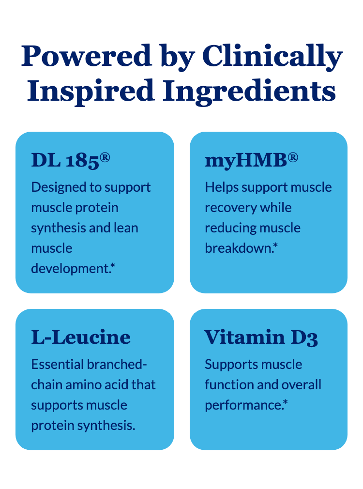
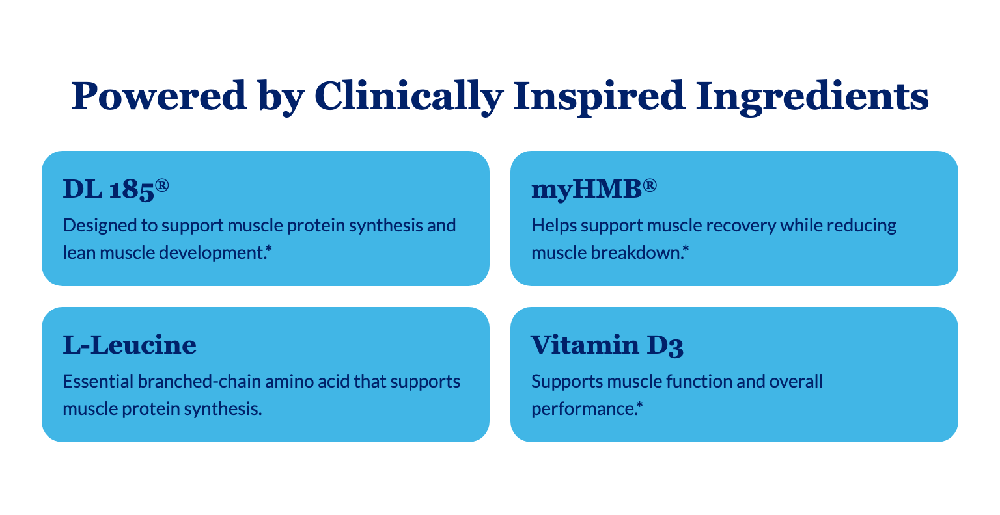
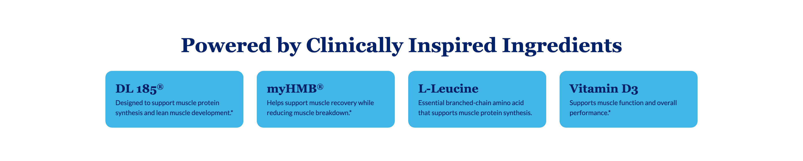

Platter component
Feature Tiles
Transcribed from Confluence, authored by Sarah Lee, page last updated 2026-08-27. It is the client's spec, reproduced verbatim in substance. Where our implementation deviates it is recorded under Deviations, not by editing the spec.
Spec: https://getplatter.atlassian.net/wiki/spaces/TVS/pages/940965941/FSD+Feature+Tiles
02 — Screenshots
How it renders
Wipe the handle across the design to find where the build drifts from it. The Figma frame and the capture are exported at the same width, so anything that moves under the handle is a real difference. Every width is below as a plain capture.





03 — Fields
What a merchandiser fills in
Generated from _schema.ts, in the order Amplience shows them.
| Field | Type | Constraints | Description | |
|---|---|---|---|---|
headingHeading |
string | required | max 70 min 1 |
The headline above the tiles, e.g. "Powered by Clinically Inspired Ingredients". Wrap words in _underscores_ for italic and **double asterisks** for bold. Write ~12~ for subscript; a registered mark (®) is raised automatically, and a plain asterisk is never formatting. It is centred and wraps to a second line rather than shrinking, and the section grows to fit. The spec asks for 30 to 70 characters. |
headingLevelHeading level |
string | h1 · h2 · h3default "h2" |
Choose h1 only if this module is the first thing on the page and no other h1 exists. Otherwise leave it as h2 — two h1s on one page hurts SEO. Choose h3 when the module sits underneath a section that already has an h2, so the page's heading order stays unbroken. This changes nothing you can see: the size is set separately below. | |
headingSizeHeading size (desktop / mobile) |
string | 64px / 38px · 56px / 34px · 48px / 30px · 36px / 24px · 28px / 20px · 20px / 16pxdefault "48px / 30px" |
A fixed pair from the TVS type scale — the first size applies from tablet up, the second on phones. 48px / 30px is the design. 20px / 16px is smaller than an ingredient name, so the headline stops reading as a heading. | |
headingFontHeading font |
string | Lato · corisanderegular · Fieldsdefault "Fields" |
Fields is the serif this module is designed in and is the default. It is not yet installed on vitaminshoppe.com, so until it is, the heading falls back to Georgia — still a serif, but not the exact drawn face. Pick Lato if you would rather the heading match the rest of the site exactly than approximate the design. | |
tilesIngredient tiles |
array | required | Between three and eight ingredients, shown in the order you list them here. Drag a row to reorder it. Four sit across a desktop row and two across a phone; with fewer than four the desktop row centres instead of leaving an empty cell, and phones drop to a single full-width column. Every tile needs both a name and a description. This list is written by hand — nothing here is pulled from the product feed. | |
backgroundColorTile background colour |
string | The colour behind every tile — one choice for the whole section, not per tile. Light blue #41b6e6 is the design; leave empty to keep it. A hex typed without its # (41b6e6) is read as #41b6e6. Check it against the tile text colour below: the two are not checked for you, and a mid or dark colour under the navy text leaves the tiles unreadable and fails the accessibility standard this page is held to. | ||
textColorTile text colour |
string | The colour of the ingredient name and description inside every tile — one choice for the whole section. Navy #012169 is the design; leave empty to keep it. The section heading above the tiles keeps its own navy and is not affected. Change this only together with the tile background, and only to a pair with strong contrast. | ||
sectionIdSection ID |
string | max 50^[a-z][a-z0-9-]*$ |
A name for this specific module, used for two things. A link anywhere on the site can jump straight to it by ending the URL with # and this name, e.g. #key-ingredients. Page-level CSS can also target this one module rather than every Feature Tiles. Use lowercase letters, numbers and hyphens, start with a letter, and make it unique on the page — two modules sharing an ID will break the jump link. Leave empty if you need neither. |
04 — Sample content
A filled-in example
From _content.json. This is what the screenshots above are rendering.
{
"heading": "Powered by Clinically Inspired Ingredients",
"headingLevel": "h2",
"headingSize": "48px / 30px",
"headingFont": "Fields",
"tiles": [
{
"name": "DL 185®",
"description": "Designed to support muscle protein synthesis and lean muscle development.*"
},
{
"name": "myHMB®",
"description": "Helps support muscle recovery while reducing muscle breakdown.*"
},
{
"name": "L-Leucine",
"description": "Essential branched-chain amino acid that supports muscle protein synthesis."
},
{
"name": "Vitamin D3",
"description": "Supports muscle function and overall performance.*"
}
],
"sectionId": "feature-tiles"
}05 — Design reference
Design reference
The design node 18362:109767 is a section holding six frames — three desktop and three mobile — one per tile count. The pair recorded in the frontmatter is the four-tile case, which is the only count where the grid is exactly full at both widths.
| View | Frame | Size |
|---|---|---|
| Section — desktop, 3 tiles | Figma 18345:109329 | 1512 × 386 |
| Section — desktop, 4 tiles | Figma 18345:109395 | 1512 × 386 |
| Section — desktop, 8 tiles | Figma 18345:109461 | 1512 × 554 |
| Section — mobile, 3 tiles | Figma 18361:109527 | 375 × 520 |
| Section — mobile, 4 tiles | Figma 18362:109607 | 375 × 526 |
| Section — mobile, 8 tiles | Figma 18362:109687 | 375 × 892 |
Section shell
| Desktop | Mobile | |
|---|---|---|
| Background | #ffffff (sections/background-main) | same |
| Padding | 48px sides, 80px top and bottom | 16px sides, 40px top and bottom |
| Content width | 1416px (1512 − 96) | 343px (375 − 32) |
| Heading → grid gap | 32px | 24px |
| Heading | Fields Bold 48px / 1.2, centred, #012169 | Fields Bold 30px / 1.2, centred |
The heading pair 48 / 30 is the headingSize default; the section header carries a heading and nothing else — no eyebrow, no description, and the actions frame holding the buttons is hidden in all six frames.
Tile
| Desktop | Mobile | |
|---|---|---|
| Background | #41b6e6 (sections/background-accent) | same |
| Corner radius | 16px | 16px |
| Padding | 24px | 16px |
| Column gap | 32px | 16px |
| Row gap | 32px | 16px |
| Name | Fields Bold 28px / 1.3, #012169 | Fields Bold 20px / 1.3 |
| Description | Lato Regular 16px / 1.5, #012169 | Lato Regular 14px / 1.5 |
| Name → description gap | 4px | 4px |
The 28 / 20 name pair is Figma's richtext-md/h3 step and the 16 / 14 description pair is its richtext-md/p1 step, which tailwind.config.js already carries as richtext-p1.
Grid, per tile count
| Tiles | Desktop | Mobile |
|---|---|---|
| 3 | one row, tiles fixed at 330px, row centred (first tile starts at x=181) | one column, tile full width (343px) |
| 4 | one row of 4, tiles 330px, exactly filling 1416px | two columns, tiles 163.5px |
| 8 | two rows of 4 | four rows of 2 |
06 — User requirement
User requirement
- User can read multiple ingredient name + benefit text blocks.
07 — Admin requirement
Admin requirement
| Content Type | Functional Requirement | Character count | Asset/Copy Requirement | Responsive & Content Behavior |
|---|---|---|---|---|
| Heading (Required) | Admin can edit the section heading. | 30-70 | - | Wraps to 2 lines on desktop; card expands vertically. |
| Ingredient Card (Required, min 3 – max 8) | Admin adds/edits ingredient name + benefit description per card. Content is manually curated — not pulled from a data feed. Admin can change background color + text color of tile globally per section. | 15-40 & 80-180 | - | If fewer than 4 cards are added (minimum 3), Desktop: the row centers instead of leaving a visibly empty grid cell; card sizing does not change. Mobile: all cards are stacked as 1 column, instead of 2 column layout |
The Character count cell for the Ingredient Card reads "15-40 & 80-180" in the source: the first range is the ingredient name, the second the benefit description. The Asset/Copy cells are a literal dash in the source for both rows.
08 — Other requirements
Other requirements
- Analytics: Component supports automated impression tracking (viewport entry) via the standard
raiseEventhandler.
09 — Open comments
Open comments
Desktop grid is 4 columns — answered 2026-08-27
answered 2026-08-27
The Admin requirement never states a column count; it only describes the fewer-than-four case as "the row centers instead of leaving a visibly empty grid cell". The design answers it: the four-tile desktop frame is four 330px tiles with 32px gaps, which is exactly the 1416px content width, and the eight-tile frame is two such rows. Answered by the design rather than by the client.
Mobile is two columns by default — answered 2026-08-27
answered 2026-08-27
Confirmed by the frames, and it is the opposite of every other tile module in this phase. 18361:109527 stacks three tiles in one full-width column; 18362:109607 and 18362:109687 both lay tiles out two across at 163.5px. So one column is the under-four exception and two columns is the default.
Five, six and seven tiles are undrawn — unanswered 2026-08-27
unanswered 2026-08-27
Only 3, 4 and 8 are drawn. The centring rule is written for "fewer than 4" only, so it is unclear whether a trailing partial row — the last two tiles of a six-tile set, say — should centre like the three-tile row or sit left-aligned under the row above. Implemented centred: the grid is a wrapping flex row with justify-center, which reproduces the three-tile frame exactly (tiles keep their width and the row starts at x=181 on a 1416px container) and, as one consequence of one rule, also centres a trailing partial row. Confirm that is wanted for 5, 6 and 7 tiles.
Tile colours are one pair for the whole section — answered 2026-08-27
answered 2026-08-27
"Admin can change background color + text color of tile globally per section" reads as one background and one text colour applied to every tile, not a per-tile pair, and every tile in every frame is the same #41b6e6 on #012169. Implemented as two section-level colour fields.
Heading character range vs the shared 90-character limit — unanswered 2026-08-27
unanswered 2026-08-27
The heading is specified as 30-70 characters. Every other heading in the library carries the shared 90-character cap from schema/vocabulary.ts. The upper bound is applied as the field's maxLength; the lower bound is not enforced, because a short, correct heading ("Key Ingredients", 15 characters) would otherwise fail to save. Confirm 70 is a real ceiling rather than a guideline — the heading drawn in the design, "Powered by Clinically Inspired Ingredients", is 41 characters and sits comfortably inside it.
Impression tracking has no agreed event — unanswered 2026-08-27
unanswered 2026-08-27
Other requirements asks for automated impression tracking on viewport entry via "the standard raiseEvent handler", but no impression event name appears in any TVS template or in TVS-Common. The same question is open on Slim Hero Banner A, Hero Banner, Expert Module, Bundle Module, FAQ and Benefits Highlight. It should be answered once for every module rather than invented separately here.
10 — Deviations
Deviations
Impression tracking is not implemented
Not built
Other requirements asks for "automated impression tracking (viewport entry)". No impression event name exists to call, so nothing ships. This matches every section built so far — impression analytics is an open item across the whole project, first raised in the Slim Hero's FSD, and it should be solved once for all modules rather than invented separately in this one.
The heading's lower character bound is not enforced
Built
The spec gives the heading as 30-70 characters. maxLength is set to 70; there is no minLength beyond the shared 1 that makes the field required. A 30-character floor would reject "Key Ingredients" and similar correct headings, and Amplience surfaces a failed minimum as a save error rather than a warning.
There is no description field under the heading
Built
The scaffold committed in ead8b46 carried the shared body field. Neither the Admin requirement nor any of the six frames has one: the Section Header instance is 58px tall on desktop and holds a heading alone. The field is removed rather than left in the panel as a setting that renders nothing. Nothing is lost — feature-tiles has no _amplience.json, so it has never been published and no live content item can carry a value for it.
There is no call to action
Built
The actions frame is present but hidden in all six frames, so no ctaLabel / ctaUrl / ctaStyle cluster is added. The Admin requirement lists no button either.